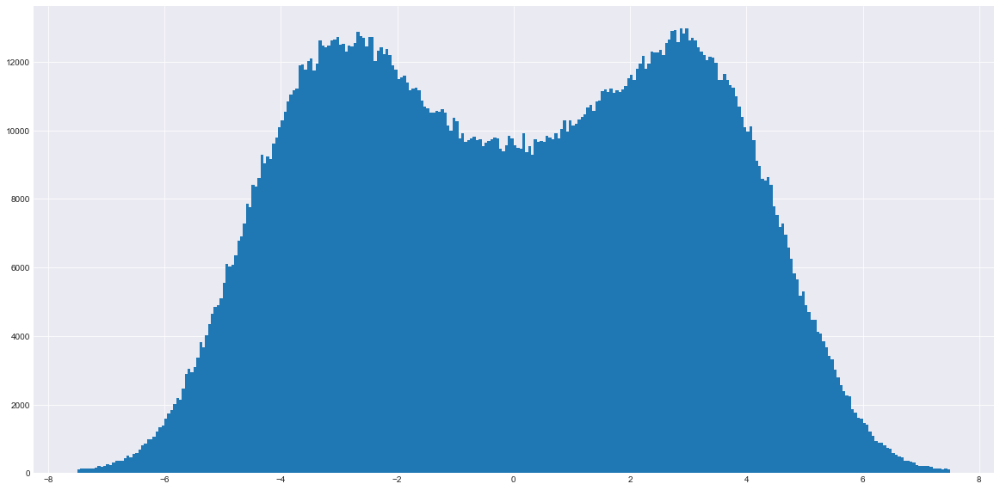

←
早上好中国，现在我有大山雀！
大山雀（如图）
今晚上刚刚合成出来的一个因子，histogram一画发现长得像大山雀。
很有意思的是这个东西能通过JB检验，skew和kurt分别是-0.08与3.48，JB检验结果好的一批。

Bid-Ask Short-Time Pressure Features
1. (bv2-bv5)/(bv2-bv5 + av2-av5) OIR for Not Ask-Bid 1
2. l1oir * 3 + diff_range
3. bp2 - bp1
4. small_range ** 1.99